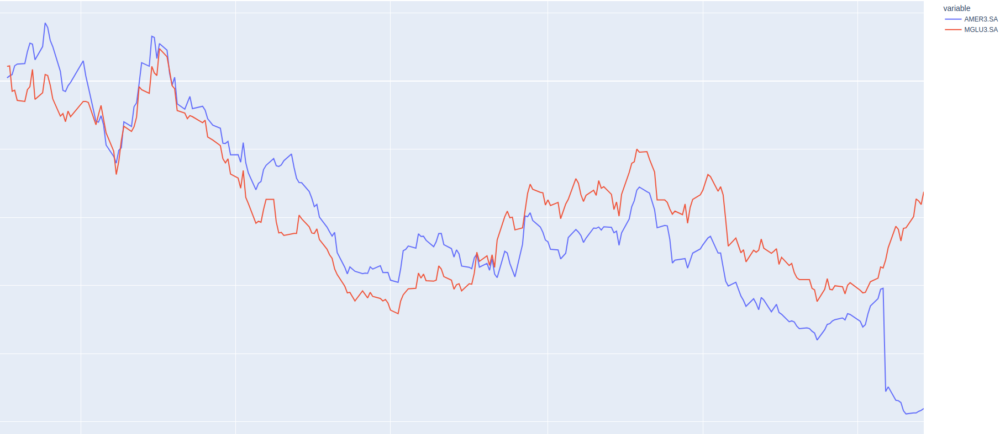
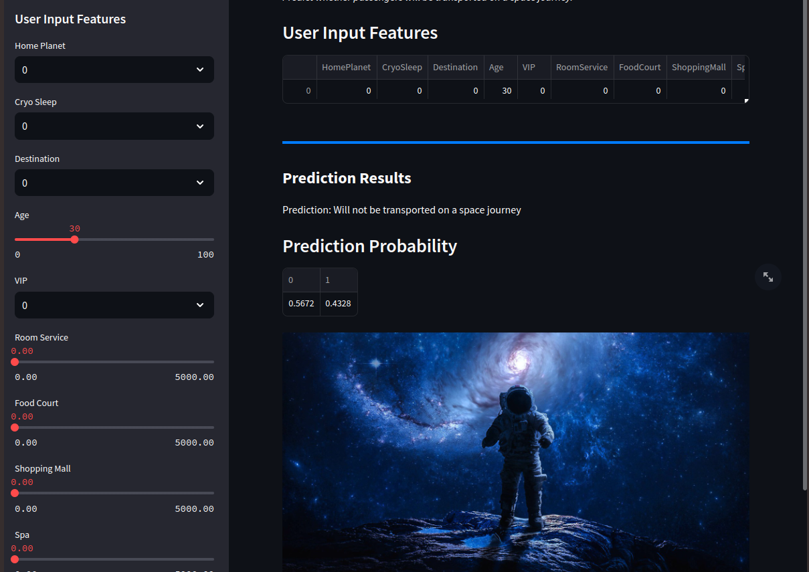

Risk Management
Automated portfolio monitoring, Seasonality, Volatility, Correlation, Value at Risk, Sharpe Ratio, and Portfolio Return.
Developed during the "Mercado de Capitais" course, questioning manual daily tasks of portfolio managers in Excel, leading to automation using Python.
Tools Used
- Git, Github, Docker
- Pandas, Numpy, Scipy
- Interactive charts with Plotly
- Data collection with yfinance

Machine Learning Deploy
Deploying a trained Machine Learning model for effective team use. Covers all ML Ops phases from data validation to deployment.
Tools Used
- Git, Github
- Pandas, Numpy, Matplotlib
- Sklearn RandomForestClassifier
- Pickle for model serialization
- Streamlit for deployment
- CSS for page customization
Legal Big Data
Tracking laws approved in municipalities to train Deep Learning models and perform BI analysis.
Tools Used
- Git, Github, Docker
- Boto3, Pandas, Requests, BeautifulSoup
- AWS ECR, EC2, S3

Europe Real Estate
Developed a program to scrape real estate data based on the best prices per square meter.
Tools Used
- Git, Github, Streamlit
- Selenium, Requests, BeautifulSoup
- Pandas, Yahoo Finance